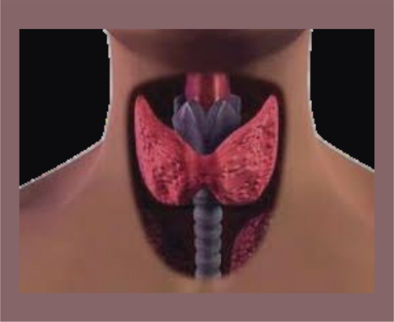

El bocio es el aumento del tamaño de la glándula tiroides, que puede ser difuso o nodular, y puede asociarse a una función tiroidea normal, aumentada o disminuida. Es la patología tiroidea de mayor prevalencia mundial y se manifiesta como un agrandamiento visible o palpable en la base del cuello.
El bocio se desarrolla como una respuesta adaptativa de las células foliculares tiroideas a factores que alteran la síntesis de hormonas tiroideas. La disminución en la producción de hormonas tiroideas (T3 y T4) provoca una reducción de la retroalimentación negativa sobre la hipófisis, lo que aumenta la secreción de TSH. La TSH estimula el crecimiento y la proliferación de la tiroides, generando hipertrofia e hiperplasia folicular.
Las causas incluyen:
Deficiencia de yodo, que limita la síntesis hormonal.
Estimulación anormal por TSH o anticuerpos (como en enfermedades autoinmunes).
Procesos inflamatorios (tiroiditis subaguda o crónica).
Enfermedades infiltrativas o tumorales.
Factores genéticos y ambientales que afectan la función tiroidea y la respuesta a la TSH.
Afecta a todas las edades, aunque es más frecuente en mujeres.
La causa más común a nivel mundial es la deficiencia de yodo, especialmente en zonas endémicas donde más del 10% de la población presenta bocio.
En países con yodación adecuada, las causas más frecuentes son la tiroiditis autoinmune (como Hashimoto) y el bocio multinodular.
La prevalencia en escolares puede llegar al 1-2% para tiroiditis autoinmune.
Factores genéticos y enfermedades asociadas (síndrome de Turner, Klinefelter, diabetes mellitus, celiaquía) aumentan el riesgo.
Agrandamiento visible o palpable en la base del cuello, que puede ser simétrico o asimétrico, difuso o nodular.
Puede no presentar síntomas si el bocio es pequeño y no compresivo.
Signos de compresión local si el bocio es grande: disfagia, disfonía, tos, dificultad respiratoria.
Síntomas relacionados con la función tiroidea:
Hipotiroidismo: fatiga, aumento de peso, intolerancia al frío, piel seca, estreñimiento.
Hipertiroidismo (en bocio tóxico): pérdida de peso, palpitaciones, nerviosismo, sudoración, temblor.
Grupo farmacológico
Fármaco
Dosis
Vía
Frecuencia
Hormonas tiroideas
Levotiroxina (T4)
50-150 mcg/día (ajustable)
Oral
Diario
Antitiroideos
Metimazol
Según indicación médica
Oral
Diario (varias dosis)
Antitiroideos
Propiltiouracilo
Según indicación médica
Oral
Diario (varias dosis)
Consideraciones terapéuticas:
En bocio por deficiencia de yodo, se suplementa yodo.
En bocio con hipotiroidismo (como en tiroiditis de Hashimoto), se trata con levotiroxina para normalizar la función tiroidea y reducir el tamaño del bocio.
En bocio hiperfuncionante (enfermedad de Graves o bocio tóxico), se usan antitiroideos para controlar la producción hormonal.
Objetivos dietoterapéuticos:
Prevenir y corregir la deficiencia de yodo.
Evitar sustancias bociógenas en exceso que interfieran con la función tiroidea.
Mantener un estado nutricional adecuado para apoyar la función tiroidea.
Macronutrientes clave:
Promover la ingesta adecuada de yodo (microelemento esencial).
No hay restricción específica de macronutrientes, pero se recomienda una dieta equilibrada.
Recomendaciones específicas:
Dieta rica en yodo: consumo de sal yodada, pescados, mariscos, lácteos.
Evitar el consumo excesivo de alimentos bociógenos (coles, nabos, mandioca) especialmente en contextos de deficiencia de yodo.
En áreas no endémicas, evitar medicamentos o sustancias con efecto bociógeno sin supervisión.
No hay una dieta específica tipo DASH o hiposódica para bocio, pero una dieta equilibrada y rica en micronutrientes es fundamental.
Hipotiroidismo

El hipotiroidismo es un síndrome clínico resultante de la deficiencia de hormonas tiroideas o, más raramente, de su resistencia periférica, que produce una disminución generalizada de los procesos metabólicos.
Se clasifica como:
Primario: fallo tiroideo.
Secundario: déficit de TSH.
Terciario: déficit de TRH.
Periférico: resistencia a hormonas tiroideas.
El hipotiroidismo primario puede ser:
Subclínico: TSH elevada con T4 normal.
Clínico: TSH elevada con T4 baja.
Hipotiroidismo primario (90-95% casos):
Tiroiditis autoinmune (Hashimoto):
Infiltración linfocitaria de la glándula tiroides.
Presencia de anticuerpos anti-TPO y anti-tiroglobulina.
Destrucción progresiva de folículos tiroideos.
Apoptosis de tirocitos mediada por células T.
Fibrosis y atrofia glandular.
Déficit de yodo:
Insuficiente sustrato para síntesis hormonal.
Hipotiroidismo con bocio compensador.
Iatrogénico:
Post-tiroidectomía.
Post-radioyodo.
Fármacos antitiroideos.
Amiodarona, litio, inhibidores de tirosina quinasa.
Disgenesia tiroidea:
Agenesia, hipoplasia o ectopia tiroidea.
Causa más frecuente de hipotiroidismo congénito.
Hipotiroidismo central (5-10% casos):
Secundario: déficit de TSH por patología hipofisaria.
Terciario: déficit de TRH por patología hipotalámica.
Menor elevación de TSH o TSH inapropiadamente normal.
Hipotiroidismo periférico (raro):
Resistencia a hormonas tiroideas.
Defectos en transportadores de hormonas tiroideas.
Defectos en desyodasas.
Consecuencias fisiopatológicas:
Disminución del metabolismo basal.
Reducción del consumo de oxígeno.
Disminución de la termogénesis.
Alteración del metabolismo de carbohidratos, lípidos y proteínas.
Acumulación de glucosaminoglicanos en tejidos (mixedema).
Enlentecimiento de la conducción nerviosa.
Disminución del gasto cardíaco.
Alteración de la función renal y filtrado glomerular.
Anemia (normocítica, macrocítica o microcítica).
Complicaciones graves:
Coma mixedematoso: hipotiroidismo severo con hipotermia, hipoventilación, hipotensión e hiponatremia.
Derrame pericárdico y pleural.
Insuficiencia cardíaca.
leo paralítico.
Encefalopatía de Hashimoto.
Prevalencia global: 1-2% de la población.
Hipotiroidismo subclínico: 4-10%.
Mayor frecuencia en mujeres (5-10:1).
Aumenta con la edad (>10% en mayores de 65 años).
Tiroiditis autoinmune: principal causa en áreas con suficiencia de yodo.
Déficit de yodo: principal causa en áreas con deficiencia.
Factores de riesgo:
Sexo femenino.
Edad avanzada.
Historia familiar de enfermedad tiroidea autoinmune.
Otras enfermedades autoinmunes.
Síndrome de Down, Turner.
Radiación cervical previa.
Posparto reciente.
Fármacos (amiodarona, litio, interferón).
Fatiga, astenia, somnolencia.
Intolerancia al frío.
Aumento de peso con apetito disminuido.
Estreñimiento.
Piel seca, fría y pálida.
Cabello seco, quebradizo y caída.
Edema palpebral y facial (mixedema).
Voz ronca.
Bradicardia.
Derrame pericárdico o pleural.
Parestesias (síndrome del túnel carpiano).
Alteraciones menstruales (menorragia).
Infertilidad, abortos recurrentes.
Disminución de libido.
Deterioro cognitivo, depresión.
Retraso en reflejos osteotendinosos.
Anemia.
Hipercolesterolemia.
Elevación de CPK.
Hiponatremia.
Grupo farmacológico
Fármaco
Dosis
Vía de administración
Frecuencia
Hormonas tiroideas
Levotiroxina (T4)
1.6-1.8 μg/kg
Oral
Diaria, en ayunas
Hormonas tiroideas
Liotironina (T3)
5-25 μg
Oral
2-3 veces/día (casos seleccionados)
Combinación T4+T3
T4/T3 (proporción 4:1)
Variable
Oral
Diaria (casos seleccionados)
Consideraciones:
Inicio a dosis bajas en ancianos y cardiopatía.
Ajuste gradual según niveles de TSH.
Objetivo: normalización de TSH (0.5-4.5 mUI/L).
Monitorización periódica de función tiroidea.
Tratamiento de comorbilidades asociadas.
Tratamiento urgente en coma mixedematoso (levotiroxina IV).
Objetivos dietoterapéuticos:
Mantener un peso corporal adecuado.
Prevenir el estreñimiento.
Controlar la dislipidemia asociada.
Asegurar un aporte adecuado de yodo.
Optimizar la absorción de levotiroxina.
Macronutrientes clave:
Proteínas: 0.8-1.0 g/kg/día.
Carbohidratos: 50-55% del aporte calórico total (complejos, bajo índice glucémico).
Lípidos: 25-30% del aporte calórico total (énfasis en grasas insaturadas).
Aporte calórico: ajustado al metabolismo basal disminuido.
Recomendaciones específicas:
Control calórico: reducción moderada de calorías (200-500 kcal/día menos).
Distribución en 5-6 comidas pequeñas.
Evitar ayunos prolongados.
Optimización de absorción de levotiroxina:
Tomar en ayunas, 30-60 minutos antes del desayuno.
Separar 4 horas de suplementos de calcio, hierro, antiácidos.
Evitar consumo simultáneo de soja, café, fibra en exceso.
Prevención del estreñimiento:
Aumento progresivo de fibra dietética (25-30 g/día).
Adecuada hidratación (2-2.5 L/día).
Alimentos integrales, frutas y verduras.
Control de dislipidemia:
Limitar grasas saturadas y trans.
Aumentar ácidos grasos omega-3.
Incrementar consumo de fibra soluble.
Alimentos funcionales (esteroles vegetales).
Aporte adecuado de yodo:
150 μg/día en adultos.
Uso de sal yodada.
Pescados y mariscos.
Otros nutrientes importantes:
Selenio (nueces de Brasil, pescados).
Zinc (carnes, mariscos).
Vitamina D (exposición solar moderada, lácteos fortificados).
Vitamina B12 (especialmente en anemia perniciosa asociada).
Actividad física regular adaptada a capacidad.
Educación nutricional personalizada.
Hipertiroidismo
El hipertiroidismo es un síndrome clínico resultante del exceso de hormonas tiroideas circulantes, que produce un estado hipermetabólico generalizado.
Se debe distinguir de la tirotoxicosis, que se refiere a cualquier condición con exceso de hormonas tiroideas, independientemente de su origen (tiroideo o extratiroideo).
Las causas más frecuentes son la enfermedad de Graves, el bocio multinodular tóxico y el adenoma tóxico.
Enfermedad de Graves (50-80% casos):
Trastorno autoinmune con anticuerpos estimulantes del receptor de TSH (TRAb).
Activación continua del receptor de TSH independiente de retroalimentación hipofisaria.
Hiperplasia difusa de la glándula tiroides.
Aumento de vascularización tiroidea.
Infiltración linfocitaria.
Oftalmopatía infiltrativa (40-50%) por reacción cruzada contra antígenos orbitarios.
Dermopatía (mixedema pretibial) por depósito de mucopolisacáridos.
Bocio multinodular tóxico (15-30% casos):
Nódulos autónomos con mutaciones activadoras del receptor de TSH o proteína G.
Funcionamiento independiente del control hipofisario.
Supresión de TSH.
Hipertiroidismo de desarrollo gradual.
Adenoma tóxico (5-10% casos):
Nódulo único hiperfuncionante.
Mutaciones somáticas activadoras del receptor de TSH o proteína G.
Supresión del tejido tiroideo normal circundante.
Tiroiditis:
Subaguda (De Quervain): liberación de hormona preformada por destrucción inflamatoria.
Silente o postparto: destrucción autoinmune transitoria.
Fase inicial hipertiroidea seguida de fase hipotiroidea.
Hipertiroidismo inducido por yodo (Jod-Basedow):
En bocio preexistente o enfermedad tiroidea latente.
Tras exposición a exceso de yodo (contraste, amiodarona).
Hipertiroidismo por fuentes exógenas:
Iatrogénico por sobredosificación de levotiroxina.
Tirotoxicosis facticia (ingestión subrepticia).
Struma ovarii (tejido tiroideo en teratoma ovárico).
Efectos tisulares del exceso de hormonas tiroideas:
Aumento del metabolismo basal y consumo de oxígeno.
Incremento de la termogénesis.
Taquicardia, aumento del gasto cardíaco.
Aumento de contractilidad miocárdica.
Vasodilatación periférica.
Hiperreflexia y temblor.
Aumento de resorción ósea.
Catabolismo proteico aumentado.
Intolerancia a la glucosa.
Aumento de motilidad intestinal.
Complicaciones graves:
Crisis tirotóxica: exacerbación aguda con fiebre, taquicardia, alteración mental.
Fibrilación auricular e insuficiencia cardíaca.
Miopatía tirotóxica.
Osteoporosis acelerada.
Oftalmopatía severa con neuropatía óptica.
Prevalencia global: 0.5-2% de la población.
Mayor frecuencia en mujeres (5-10:1).
Pico de incidencia de enfermedad de Graves: 30-50 años.
Bocio multinodular tóxico: más frecuente en mayores de 60 años.
Aporte calórico: aumentado según grado de hipermetabolismo (30-50% adicional).
Recomendaciones específicas:
Aumento calórico: 500-1000 kcal adicionales según severidad.
Distribución en 5-6 comidas al día.
Alimentos de alta densidad nutricional.
Proteínas de alto valor biológico: carnes magras, pescados, huevos, lácteos, legumbres combinadas con cereales.
Control de síntomas gastrointestinales: comidas frecuentes y de menor volumen, evitar alimentos irritantes en caso de diarrea.
Limitar cafeína y alcohol.
Hidratación adecuada: 2.5-3 litros diarios, reposición electrolitos si sudoración excesiva.
Micronutrientes importantes: calcio y vitamina D (prevención osteoporosis), vitaminas del grupo B, antioxidantes (C, E, selenio).
Consideraciones especiales: evitar suplementos con yodo, precaución con alimentos muy ricos en yodo, adecuado aporte de folatos si se usa propiltiouracilo, restricción calórica contraindicada.
Educación nutricional personalizada y seguimiento del estado nutricional.
Adaptación de la dieta según evolución del tratamiento.
Síndrome de Cushing
El síndrome de Cushing es un conjunto de signos y síntomas causados por una elevación persistente y excesiva de cortisol en sangre, ya sea por producción endógena aumentada o por administración exógena de glucocorticoides. La enfermedad de Cushing es una forma específica causada por un adenoma hipofisario que produce exceso de hormona adrenocorticotrópica (ACTH), estimulando la producción suprarrenal de cortisol.
El síndrome de Cushing puede originarse por:
Producción excesiva de ACTH por un adenoma hipofisario (enfermedad de Cushing), que estimula la corteza suprarrenal a secretar cortisol en exceso.
Tumores suprarrenales que producen cortisol de forma autónoma (adenomas o carcinomas).
Producción ectópica de ACTH por tumores no hipofisarios (p. ej., carcinoma pulmonar de células pequeñas).
Administración prolongada de glucocorticoides exógenos.
El cortisol en exceso altera el metabolismo de carbohidratos, grasas y proteínas, suprime la respuesta inmune, aumenta la presión arterial y afecta múltiples órganos y tejidos.
El síndrome de Cushing es infrecuente, con una incidencia estimada de 2-3 casos por millón al año.
La enfermedad de Cushing (hipersecreción hipofisaria de ACTH) representa aproximadamente el 70-85% de los casos endógenos.
Afecta más a mujeres que a hombres, especialmente en edad adulta joven y media.
Otras causas, como tumores suprarrenales o ectópicos, son menos comunes.
Obesidad central o troncal, con extremidades delgadas.
Cara redonda, roja y llena ("cara de luna llena").
Acumulación de grasa en la parte superior de la espalda ("joroba de búfalo").
Estrías cutáneas anchas, violáceas o purpúreas, especialmente en abdomen, muslos y mamas.
Piel fina, frágil, con hematomas frecuentes y lenta cicatrización.
Debilidad muscular proximal y atrofia, intolerancia al ejercicio.
Hipertensión arterial.
Diabetes mellitus o intolerancia a la glucosa.
Osteoporosis con riesgo de fracturas vertebrales y costales.